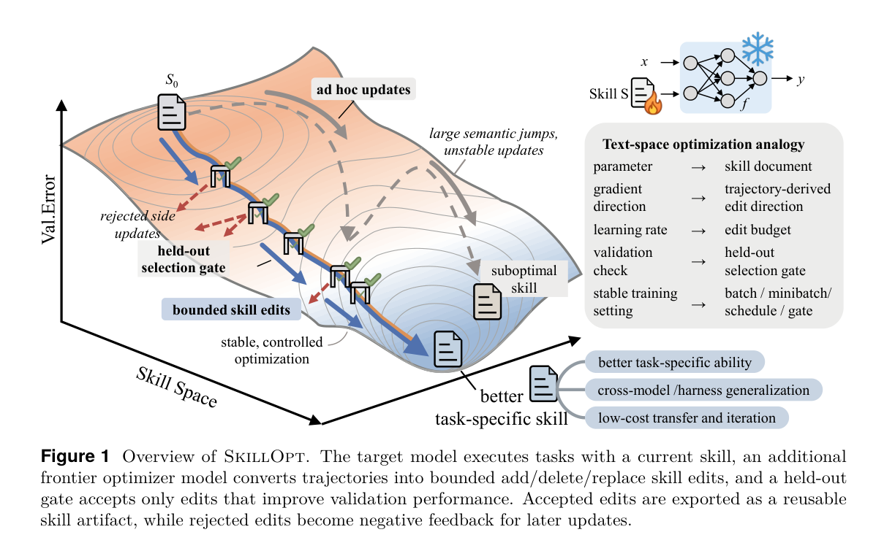
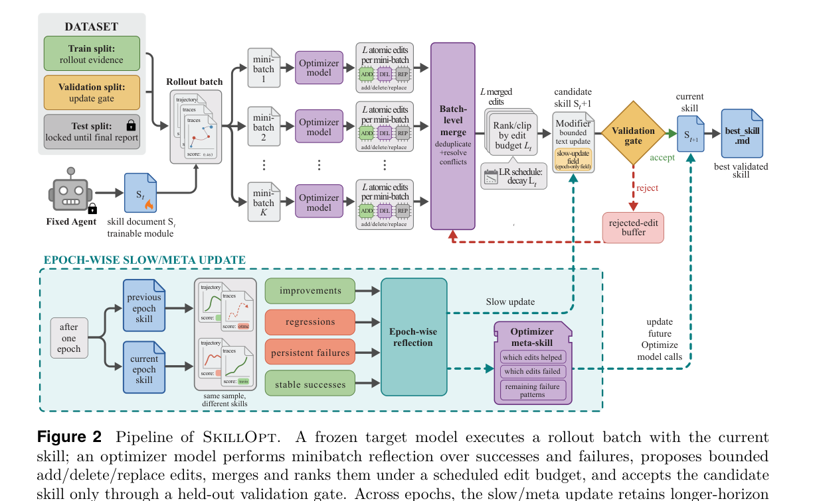
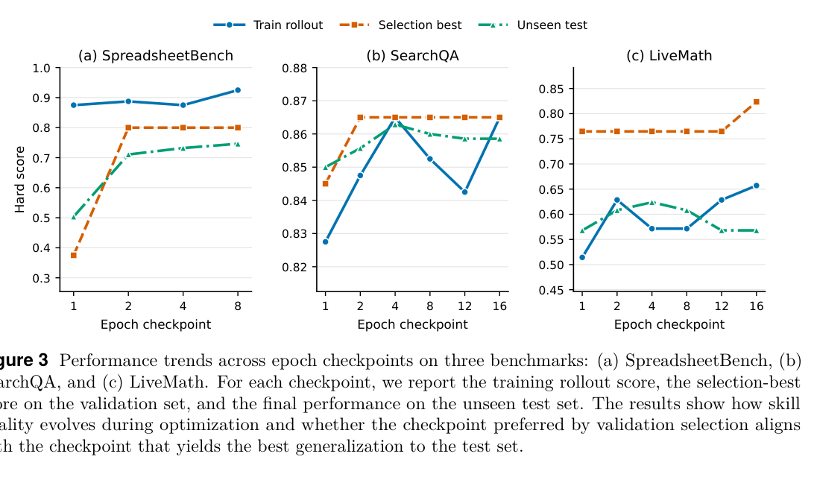
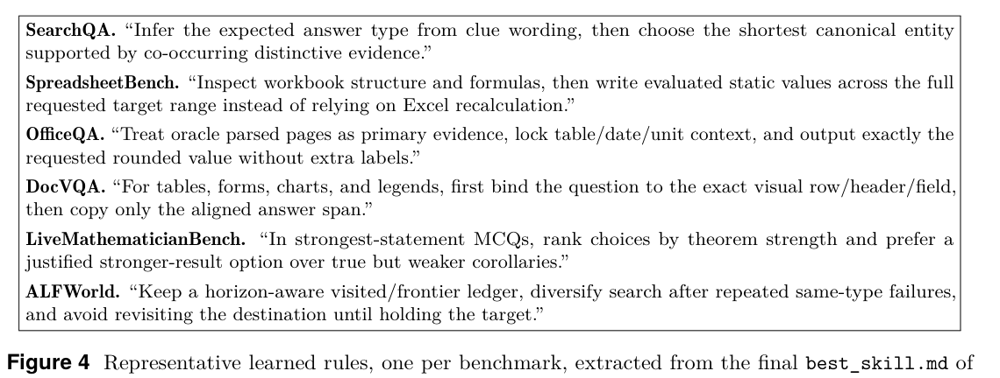
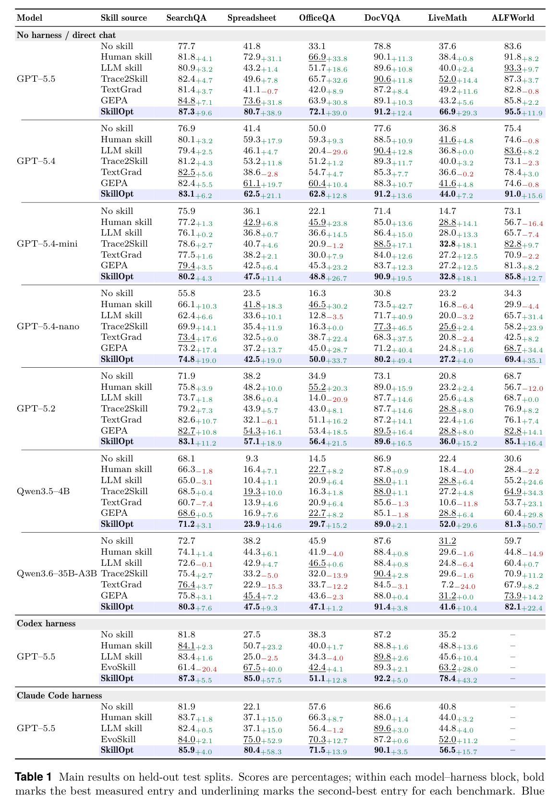
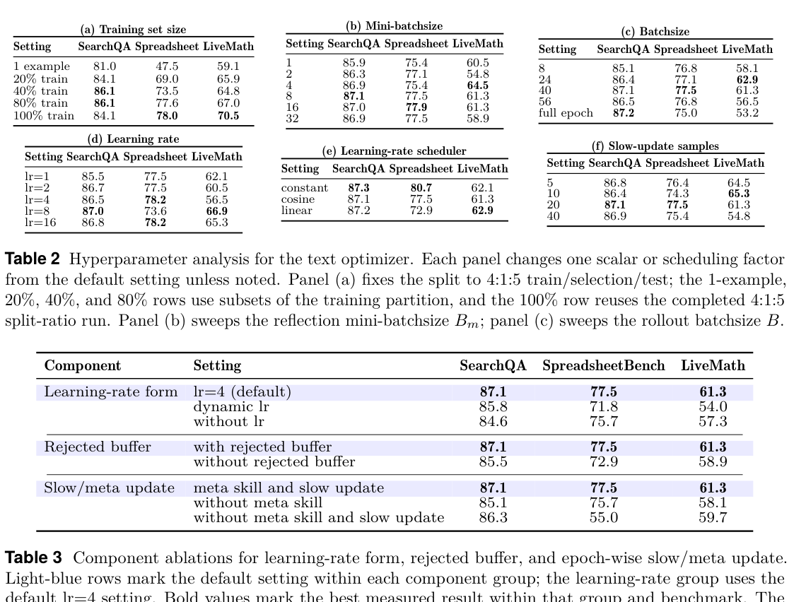
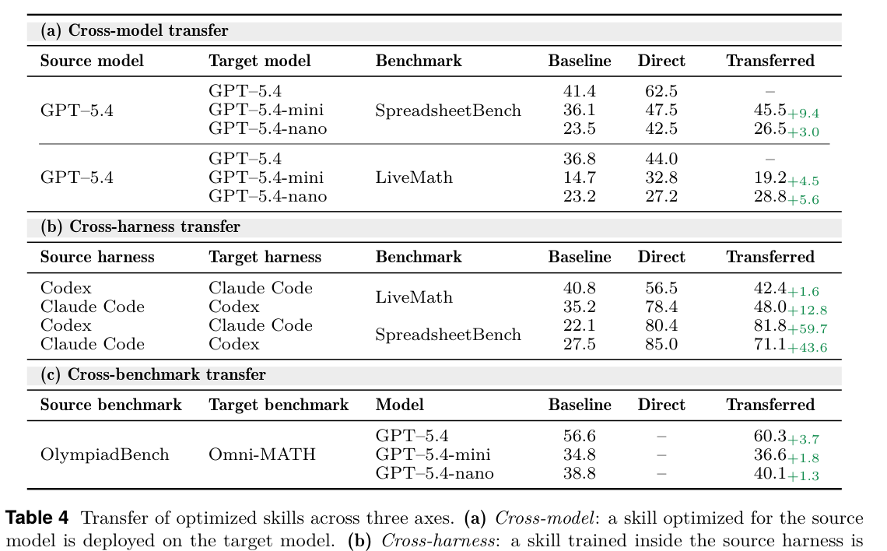
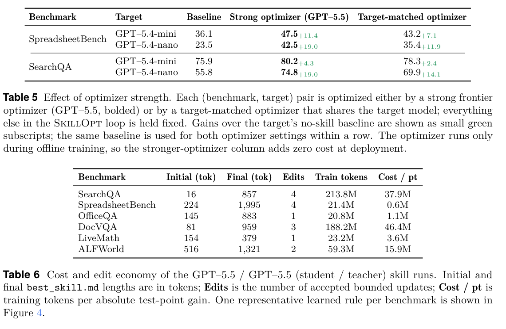

SkillOpt: Executive Strategy for Self-Evolving Agent Skills
这篇论文把 agent 的 best_skill.md 当成冻结模型之外的可训练状态：离线收集 rollout，使用 optimizer model 生成受预算约束的文本补丁，再用 held-out selection gate 只接受带来验证提升的 skill 更新。核心卖点是：训练时多花 optimizer 调用，部署时只携带一个紧凑 skill 文档，不增加额外模型调用。

SkillOpt 的关键不是“让 LLM 多反思几次”，而是把反思后的文本更新纳入一个有 batch、learning rate、validation、rejected replay 和 slow/meta memory 的优化协议。论文最强的证据来自大规模表格：六个 benchmark、七个 target models、三种 harness；最需要谨慎的地方则是评估依赖自动打分、模型版本和 split 细节的可复现性。
研究动机：把 skill 从手写提示变成可训练对象
Agent 在实际环境里需要的不只是知识问答能力，还包括如何搜证、调用工具、检查中间结果、遵守领域格式、避免循环和处理失败模式。传统适配路线有三类：手写 skill、一次性 LLM 生成 skill、或者松散的自我修订。论文认为这些都不像 optimizer：没有明确的 rollout evidence、step size、validation gate，也没有对 rejected updates 的记录，因此容易产生大幅语义跳跃、覆盖已有好规则，或者在训练反馈下无法稳定优于起点。
为什么不是 fine-tuning
论文面向的是 closed frontier models 和工具 harness。权重不可改或成本太高时，一个可审计、可迁移的 markdown skill 更现实。为什么不是 prompt search
SkillOpt 的输出是 persistent skill artifact，而不是单轮 prompt；它在 rollout、验证和部署之间保持同一个技能文本。为什么需要 gate
自然语言诊断即使看起来合理，也可能降低目标模型的真实任务分数；held-out selection gate 把“会说理由”变成“必须提高分数”。因此论文的中心问题是：如果 skill 是 agent 的适配层，能否像训练模型参数一样训练它？SkillOpt 的答案是把 skill document 视为外部状态，用独立 optimizer model 产生 add/delete/replace 补丁，并通过验证集分数严格筛选。
方法：受控的 text-space optimization loop
SkillOpt 区分两个模型角色：冻结的 target model $M$ 执行任务；optimizer model $O$ 只在离线训练期间阅读轨迹并修改 skill。最终部署的是通过验证 gate 的 $s_{\mathrm{best}}$，不是 optimizer prompt、meta skill 或训练轨迹。
问题设定与目标
| 符号 | 含义 | 实现解释 |
|---|---|---|
| $s$ | skill document | 插入 agent context 的自然语言程序，最终导出为 best_skill.md。 |
| $M$ | frozen target model | 被适配但权重不变的模型，如 GPT-5.5、GPT-5.4-mini、Qwen3.5-4B。 |
| $h$ | execution harness | direct chat、Codex CLI workspace、Claude Code workspace 或任务环境。 |
| $x,\tau,r$ | 任务、执行轨迹、分数 | 轨迹包含消息、工具调用、观察、命令输出、最终答案和 verifier feedback。 |
| $D_{\mathrm{tr}},D_{\mathrm{sel}},D_{\mathrm{test}}$ | 训练、选择、测试 split | 训练集生成候选 skill；选择集只用于 accept/reject；测试集仅最终报告。 |
| $L_t$ | textual learning rate | 第 $t$ 步最多应用的 atomic edits 数量；默认 $L_t=4$，cosine decay floor 为 2。 |
| $B,B_m$ | rollout batch 与 reflection minibatch | 默认 rollout batch size 40，reflection minibatch size 8。 |
| $\mathcal{B}$ | rejected-edit buffer | 保存失败更新和分数下降，用作后续 optimizer prompt 的负反馈。 |
| $m_{\mathrm{meta}}$ | optimizer-side meta skill | 只指导 optimizer 生成更好的编辑，不给 target model，也不部署。 |
训练循环
- Forward pass / rollout evidence。 target model 用当前 skill $s_{\mathrm{cur}}$ 在 $D_{\mathrm{tr}}$ 上执行 batch，harness 记录 scored trajectories。
- Minibatch reflection。 optimizer 分别分析 failure minibatches 和 success minibatches：失败侧提出补缺和纠错规则，成功侧提出应保留的有效模式。
- Hierarchical merge。 先合并 failure edits 和 success edits，再做 failure-prioritized final merge，过滤重复、冲突和过于实例化的建议。
- Bounded text update。 optimizer 按预期 utility 排序 edits，只保留最多 $L_t$ 个，并通过 append、insert_after、replace、delete 形成候选 skill $\tilde{s}$。
- Strict validation gate。 候选 skill 在 $D_{\mathrm{sel}}$ 上评估，只有 $score_{\mathrm{cand}}>score_{\mathrm{cur}}$ 才接受；tie 也被拒绝。
- Rejected-edit buffer。 拒绝的 edits 与失败模式进入 epoch-local buffer，后续 prompt 可以避免重复无效或有害方向。
- Epoch-wise slow/meta update。 epoch 末比较同一批样本在 previous/current skill 下的改善、退化、持续失败和稳定成功；写入受保护 slow-update 区域，同时更新 optimizer-only meta skill。

实验设计与复现细节
实验覆盖六个 benchmark：SearchQA、SpreadsheetBench、OfficeQA、DocVQA、LiveMathematicianBench 和 ALFWorld。任务类型包括单轮 QA、电子表格代码/工具操作、多轮 Office 文档问答、多模态文档问答、数学 MCQ 与 embodied sequential decision making。评价指标使用各 benchmark 原生 hard score 或 exact-match accuracy。
| 维度 | 论文设置 | 复现注意点 |
|---|---|---|
| Target models | GPT-5.5、GPT-5.4、GPT-5.4-mini、GPT-5.4-nano、GPT-5.2、Qwen3.5-4B、Qwen3.6-35B-A3B | 多数组合为 direct chat；Codex/Claude Code harness 只报告 GPT-5.5。 |
| Harness | direct chat、Codex CLI workspace-write sandbox、Claude Code CLI workspace | Codex/Claude Code 通过同一 best_skill.md 格式实现 cross-harness transfer。 |
| Baselines | No skill、Human skill、one-shot LLM skill、Trace2Skill、TextGrad、GEPA、EvoSkill | EvoSkill 只用于 harness-backed comparison；TextGrad/GEPA 用于 direct-chat prompt optimization 对比。 |
| Splits | dataset-backed runs 使用 deterministic train/selection/test split，默认 2:1:7，split_seed = 42 | selection split 只做 gate，不报告为最终结果；test split 锁定到最终报告。 |
| 默认优化器 | 4 epochs，rollout batch 40，reflection minibatch 8，16 analyst workers，merge batch 8，$L_t=4$，cosine decay floor 2 | LiveMath 和 ALFWorld 因训练池受限使用 per-benchmark configs；论文给出规模但未列完整索引，需结合代码核对。 |
| Gate 与 memory | 严格大于当前 selection score 才接受；rejected buffer、slow update、optimizer-side meta skill 默认开启 | Appendix C.2 给出 JSON prompt contracts，便于复现 parser 和 patch protocol。 |
| Prompt outputs | failure analysis、success analysis、failure merge、success merge、final merge、ranking、slow update、meta skill 均要求 JSON | 这降低手工干预，但实际复现需确认 JSON schema、patch apply report 和 hash cache 实现。 |
Optimizer prompt contracts
Appendix C.2 把 optimizer prompt 拆为八类：failure analyst、success analyst、failure merge、success merge、final merge、ranking、slow_update 和 meta_skill。共同约束是输出 valid JSON，edits 只允许 append、insert_after、replace、delete，并且不能修改 SLOW_UPDATE_START 与 SLOW_UPDATE_END 之间的 protected section。
实验结果与核心结论
论文的主结果是一个很强的经验性结论：在所有报告单元中，SkillOpt 都优于或追平最强 baseline；收益尤其集中在程序性、工具性任务，如 SpreadsheetBench、OfficeQA、LiveMath 和 harness-backed execution。
Table 1 摘要：GPT-5.5 direct chat 的完整六任务对比
| Benchmark | No skill | Best non-SkillOpt baseline | SkillOpt | Gain over no skill | 解释 |
|---|---|---|---|---|---|
| SearchQA | 77.7 | GEPA 84.8 | 87.3 | +9.6 | 接近上限的抽取式 QA 仍有小幅提升。 |
| SpreadsheetBench | 41.8 | GEPA 73.6 | 80.7 | +38.9 | 最受益于 workbook 结构检查、公式验证和输出格式规则。 |
| OfficeQA | 33.1 | Human skill 66.9 | 72.1 | +39.0 | 多轮工具调用与文档表格/单位上下文规则带来显著收益。 |
| DocVQA | 78.8 | Trace2Skill 90.6 | 91.2 | +12.4 | 视觉区域绑定和答案 span 复制规则补足细节。 |
| LiveMath | 37.6 | Trace2Skill 52.0 | 66.9 | +29.3 | 强陈述 MCQ 的选择策略被编码为可迁移规则。 |
| ALFWorld | 83.6 | LLM skill 93.3 | 95.5 | +11.9 | 状态记忆、frontier ledger 和循环打断对 embodied search 有效。 |
Harness-backed execution：Codex 与 Claude Code
| Harness | SearchQA | Spreadsheet | OfficeQA | DocVQA | LiveMath | 平均提升 |
|---|---|---|---|---|---|---|
| Codex / GPT-5.5 | 81.8 → 87.3 | 27.5 → 85.0 | 38.3 → 51.1 | 87.2 → 92.2 | 35.2 → 78.4 | +24.8 |
| Claude Code / GPT-5.5 | 81.9 → 85.9 | 22.1 → 80.4 | 57.6 → 71.5 | 86.6 → 90.1 | 40.8 → 56.5 | +19.1 |
这组结果说明 skill artifact 不只是 direct-chat prompt：同一个优化接口可以接入代码/文件/工具环境。ALFWorld 在 Codex/Claude Code rows 中缺失，因为它需要 persistent embodied-environment interaction，不适配标准 workspace harness。
消融：哪些机制真的重要
| Component | Setting | SearchQA | SpreadsheetBench | LiveMath | 结论 |
|---|---|---|---|---|---|
| Learning-rate form | lr=4 default | 87.1 | 77.5 | 61.3 | 中等 bounded update 稳定。 |
| Learning-rate form | dynamic lr / without lr | 85.8 / 84.6 | 71.8 / 75.7 | 54.0 / 57.3 | 无显式 edit budget 会损害稳定性。 |
| Rejected buffer | with vs. without | 87.1 vs. 85.5 | 77.5 vs. 72.9 | 61.3 vs. 58.9 | 负反馈 buffer 帮助避免重复坏编辑。 |
| Slow/meta update | full vs. no meta/slow | 87.1 vs. 86.3 | 77.5 vs. 55.0 | 61.3 vs. 59.7 | SpreadsheetBench 对长程记忆最敏感。 |
Table 2 的 hyperparameter sweeps 还显示：训练数据更多时 procedural benchmarks 提升明显；reflection minibatch 和 rollout batch 的变化相对不脆弱；不同 scheduler 之间有差异但不改变“bounded updates 比无约束改写更稳”的结论。
Transfer：skill 是可复用 artifact，而非单点 prompt
| Transfer type | Source → Target | Benchmark | Baseline | In-domain SkillOpt | Transferred |
|---|---|---|---|---|---|
| Cross-model | GPT-5.4 → GPT-5.4-mini | SpreadsheetBench | 36.1 | 47.5 | 45.5 (+9.4) |
| Cross-model | GPT-5.4 → GPT-5.4-nano | LiveMath | 23.2 | 27.2 | 28.8 (+5.6) |
| Cross-harness | Codex → Claude Code | SpreadsheetBench | 22.1 | 80.4 | 81.8 (+59.7) |
| Cross-harness | Claude Code → Codex | SpreadsheetBench | 27.5 | 85.0 | 71.1 (+43.6) |
| Cross-benchmark | OlympiadBench → Omni-MATH | GPT-5.4 / mini / nano | 56.6 / 34.8 / 38.8 | 未报告 | 60.3 / 36.6 / 40.1 |
训练成本与 artifact 经济性
| Benchmark | Initial tokens | Final tokens | Accepted edits | Train tokens | Cost / point |
|---|---|---|---|---|---|
| SearchQA | 16 | 857 | 4 | 213.8M | 37.9M |
| SpreadsheetBench | 224 | 1,995 | 4 | 21.4M | 0.6M |
| OfficeQA | 145 | 883 | 1 | 20.8M | 1.1M |
| DocVQA | 81 | 959 | 3 | 188.2M | 46.4M |
| LiveMath | 154 | 379 | 1 | 23.2M | 3.6M |
| ALFWorld | 516 | 1,321 | 2 | 59.3M | 15.9M |
最重要的部署含义是：SkillOpt 的训练 token cost 可能很高，但只在离线训练阶段支付。最终 skill 通常 300-2,000 tokens，且只需 1-4 次 accepted edits，这使其可审计、可迁移、也便于人工二次修改。
图表导航与抽取覆盖
论文标注 4 figures、6 tables。PyMuPDF 只直接抽取到 2 个嵌入图片对象，因此本页主要使用 PDF 页面渲染后的裁剪图。裁剪图来自原始 PDF，可读性高于整页截图；少量边界和 Table 1 细小上下标仍标注为需人工核对。






复现清单
必须准备
- 代码仓库：https://github.com/microsoft/SkillOpt。
- 六个 benchmark 的数据和原生 evaluator：SearchQA、SpreadsheetBench、OfficeQA、DocVQA、LiveMathematicianBench、ALFWorld。
- 目标模型访问：GPT-5.5、GPT-5.4 系列、GPT-5.2、Qwen3.5-4B、Qwen3.6-35B-A3B，或可替代的本地模型。
- 三类 harness adapters：direct chat、Codex CLI workspace、Claude Code CLI workspace。
默认训练配置
- 4 epochs；rollout batch size 40；reflection minibatch size 8。
- 16 analyst workers；merge batch size 8；teacher reflection 最多 3 refinement rounds。
- $L_t=4$，cosine decay，floor $L_t=2$；patch edit mode。
- strict gate：selection score 必须严格提升；ties rejected。
- slow update 每 epoch 采样 20 个任务；optimizer-side meta skill 开启。
复现步骤
- 用固定 seed 构造 train/selection/test split，默认 2:1:7，论文提到 split_seed = 42。
- 从初始 skill $s_0$ 开始，在 train split 收集 scored trajectories。
- 按 Appendix C.2 的 prompt contracts 生成 JSON edits，合并、排序并应用补丁。
- 每个候选 skill 在 selection split 上评估，只有提升才进入 $s_{\mathrm{cur}}$ 或 $s_{\mathrm{best}}$。
- 训练结束后只在 test split 上评估 $s_{\mathrm{best}}$，同时保存 skill hash、edit_apply_report 和 rejected buffer 记录。
缺口与人工核对
- 论文没有在正文列出所有数据索引、具体 API snapshot、decoding temperature 和完整 adapter 参数。
- Appendix C 的 benchmark 列表提到 SealQA，但主表六任务没有报告 SealQA；复现时需检查代码配置。
- Figure/Table 裁剪来自 PDF 页面渲染，Table 1 小号上下标和裁剪边界需人工核对。
- 训练成本以 token 计，真实成本取决于模型价格、并行 worker 和失败重试策略。
复现等级判断：medium。论文给出算法、prompt contracts、主要超参数和代码入口，但闭源模型版本、数据 split 细节与 harness adapter 的端到端可运行性仍需代码仓库和凭证验证。
审稿式评价
优点
论文把 skill optimization 从“提示工程技巧”明确提升为训练协议：有状态、有 batch、有文本 learning rate、有验证集 gate、有 rejected replay、有 slow/meta two-timescale memory。实验覆盖面也大，尤其把 direct chat 与 Codex/Claude Code harness 统一到同一 artifact 格式，应用价值很强。
证据强度
主结果 52/52 单元最优或并列最优很显眼；关键增益在 procedural benchmarks 上幅度大，且 Table 4 的 cross-harness transfer 强化了“学到的是程序而非 prompt 表面形式”的解释。
主要弱点
方法高度依赖可靠自动评分和 selection split。开放式、多目标或主观任务需要新的 evaluator，否则 validation gate 可能只是把噪声评估放大成训练信号。模型版本多为前沿闭源模型，独立复现实验成本高。
缺失实验
缺少多随机种子、置信区间、失败案例 taxonomy、对 selection split 规模的系统压力测试，以及 skill 被转移到远域任务时的 negative transfer 分析。Table 1 很强，但如果没有方差和 exact split，统计稳健性仍需外部复核。
潜在混杂
强 optimizer model 既是编辑器又是知识源；虽然 Table 5 显示 target-matched optimizer 仍有效，但更强 optimizer 可能把隐含 benchmark 知识写入 skill。需要更严格的 temporal holdout 或 adversarial split 来排除泄漏式程序学习。
改进方向
可以扩展到 reward-free 或 preference-driven gates，加入 uncertainty-aware validation、diversity replay、skill library routing，以及把 validated skill distill 回模型权重。对安全和规范任务，还需要 policy-level constraints 来防止优化器写出高分但不可接受的程序规则。
对 agent / RLVR / 自进化研究的启发
把“可读文本”纳入训练栈
SkillOpt 表明，可训练对象不一定是权重或 prompt embedding；一个可审计 skill 文档也可以承担 domain adaptation。对 agent 系统而言，这比黑箱 fine-tuning 更容易 debug 和迁移。Validation gate 是最小可行 RL
它没有做 token-level policy gradient，却保留了 RLVR 最关键的 verifier feedback：候选策略必须在 held-out split 上提升。对于工具 agent，先构造可靠 verifier 可能比先训练模型更重要。Rejected edits 可以当 replay
失败编辑不是丢弃，而是变成负样本记忆。这和 replay buffer / preference data 的思想相通，可用于避免 agent 自进化中反复走同一条坏路。Two-timescale memory 很关键
step-level patch 负责局部纠错，epoch-level slow/meta update 负责稳定方向。这个结构可迁移到 questioner-solver、自我提问、工具策略和长程任务 curriculum。技能质量要看转移
真正有用的 skill 不是在训练 split 上涨分，而是能跨模型、跨 harness 或邻近 benchmark 保持收益。未来 benchmark 应该默认报告 transfer，而不是只报告 in-domain gain。部署成本与训练成本分离
用强 optimizer 离线训练弱 target 的 skill，部署时不调用 optimizer。这适合高频生产任务：一次性训练成本可以被大量推理请求摊销。最值得借鉴的工程原则是：把 agent 的可变部分做成可版本化 artifact，给每次变更记录 evidence、patch、score、accept/reject reason，再让验证 gate 控制进入生产的版本。这样的自进化系统比“让模型自由反思并覆盖提示”更容易审计、回滚和复现。